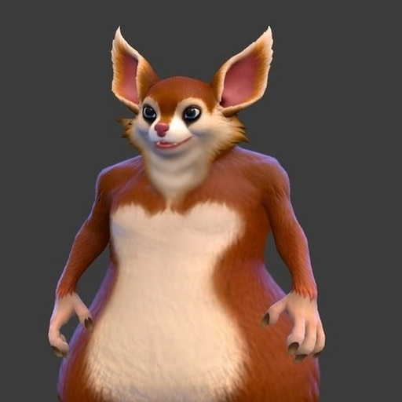
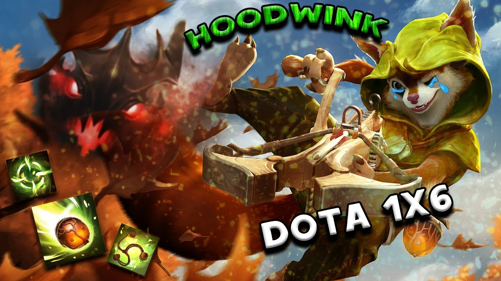

Факты про нашу курочку


Наша курочка жёстка: всех разносит на своей Белке, не давая шанса противникам.
У нашей курочки 10 000 ммр (в фантазиях 😅).
У неё более 600 игр на Белке — закрывает любого героя своей лютой белочкой.
Ни один керри не выходил с лайна победителем: ульта Белки + стан + орех = таверна.
Правда, она никогда не выходила из игры победителем… 🤭
Не один мидер не мог пиздеть на неё: она мутит, кидает репорт и пишет «спасибо за игру» 😂